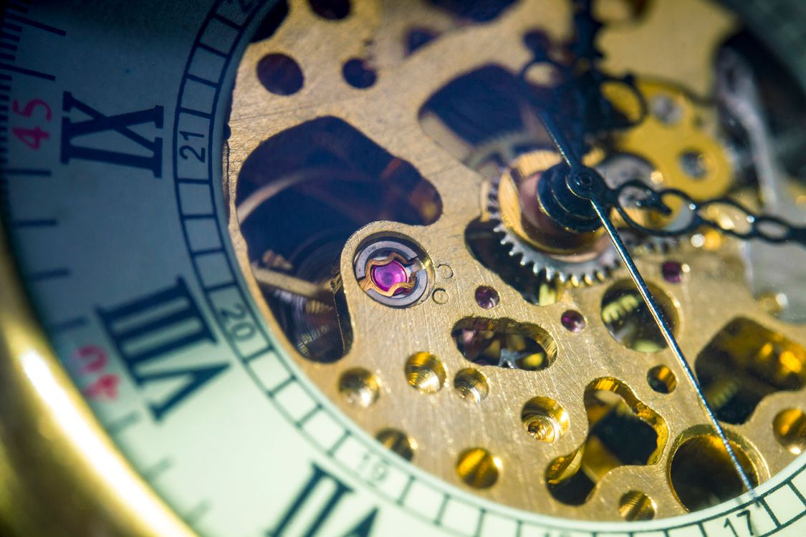
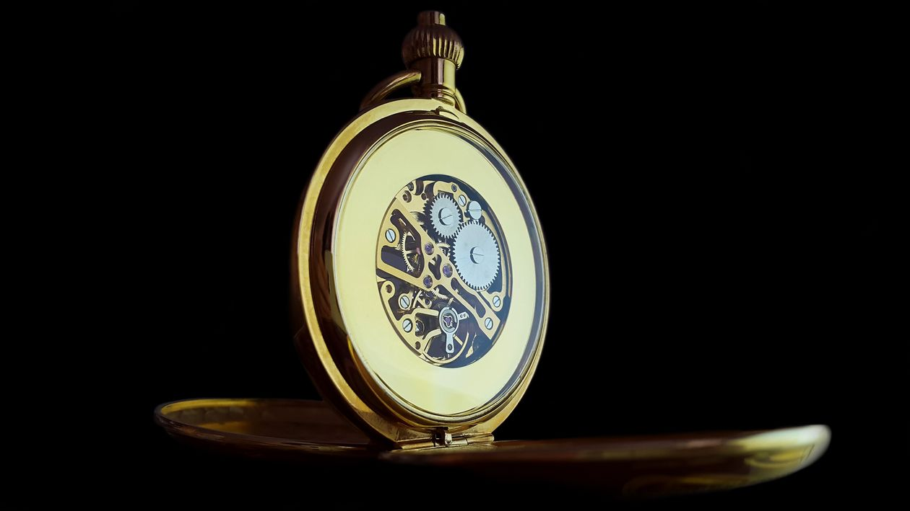
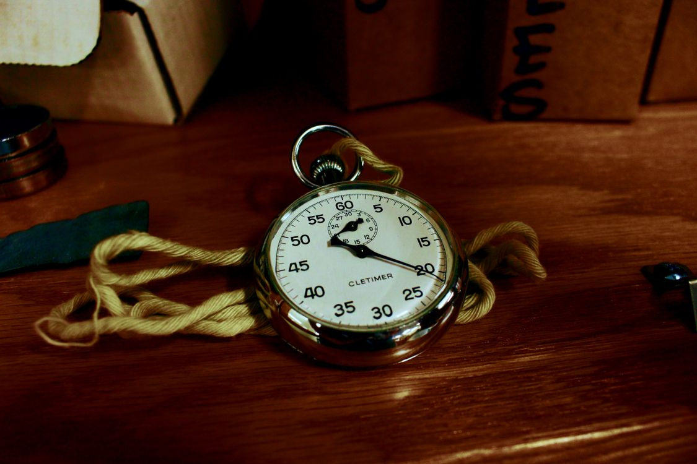

Case files — published as the client receives them
Three treatments, told whole.
Every watch treated at this bench leaves with a record: photographs before, during and after; the parts list; the measured rate. These three files are printed in that form — the brief as it arrived, the decisions as they were argued, the outcome as it measured. Nothing here is dressed as newer than it is.
Case file 1 · R-118
The tourbillon that slept in a drawer
WatchPocket tourbillon, c. 1903 — nickel bridges, fusee chain
Grade on arrivalII — Wounded: stopped, corrosion on the cage steelwork
ClassRestore — full
Bench hours137 (Table H range for the class: 112–164)
Rate, before → afterNot running → −3 / +6 s/day, across positions
StatusComplete — returned to its owner, 2026

On arrivalLeaving the bench
Plate 1. A skeletonised pocket-watch movement seen through its dial — a reference photograph (Jimmy Chan, Pexels), shown untreated at right and under a dulling tonal treatment at left to stand for the corrosion-stilled state in which R-118 arrived. It is not the watch itself; the watch's own photographs are in its owner's record.
The brief
The watch came from its owner's grandfather, stopped since before she was born and kept in its box in a drawer. Her instruction, in full: “Make it run again — and let it still be his.” She did not ask for it to look new, and the grade did not offer that in any case.
The decisions
Corrosion on the cage steelwork was arrested fibre by fibre under the microscope rather than stripped — stripping is faster and takes original surface with it. One cage screw had fractured at the slot; a replacement was fabricated to the original's pattern and blued to sit honestly beside its neighbours, and the fractured original went home in the record's parts envelope. Two further screws, age-darkened but sound, were left unbrightened. The case was not polished. Its dents are the watch's biography, and a biography is not damage.
The outcome
The watch runs. Measured across positions after regulation: −3 / +6 seconds per day — inside the −4 / +8 range Table R prints for a restored tourbillon, and a figure a 123-year-old movement may wear without apology. It was not made to look new, because it is not new; it was made to be itself, running.
Treatment record — 214 photographs, before / during / after · Parts fabricated: 1 (cage screw) · Parts replaced with stock: 0 · Original parts returned with the watch: the fractured cage screw, in the record's envelope · Owner's testimonial is printed with this watch's register entry in The Report.
Case file 2 · R-097
The grand complication, and the restoration before mine
Rate, before → afterNot running → −6 / +11 s/day, across positions
StatusComplete — striking again, 2025

As the last restorer left itAs it should stand
Plate 2. This diptych runs the other way. Left, under a brightening treatment, is the harm: a case polished until its edges went soft. Right, the same reference photograph (Felix Mittermeier, Pexels) untreated — the duller, truer state this bench works toward. Shine, on a watch of this age, is not the goal. It is frequently the evidence.
The brief
Bought at sale by a collector who suspected the shine. The suspicion was correct. Some decades ago the watch had been restored hard: bridges polished bright, two jewels reset in modern chatons that do not belong to the movement's period, the dial refinished — and the repeater train left incomplete anyway, its striking work silent.
The decisions
First, what could not be undone, stated in the report before any fee was agreed: polished metal is gone metal. The bridge edges rounded by another wheel will stay rounded, and the record says so rather than pretending otherwise. What was done: the wrong chatons removed and period-pattern chatons fabricated and fitted; the missing gong and strike rack fabricated to pattern; the train rebuilt. And the refinished dial was left exactly as found — refinishing it a second time would compound the harm with a second lie. The earlier work is recorded as “a previous restoration, workshop unknown.” It is not named, because it cannot be proven, and this bench does not print what it cannot prove.
The outcome
The watch strikes again — hours, quarters and minutes, on two gongs, one of them new-made and recorded as new-made. Regulated to −6 / +11 seconds per day, the rate its remaining fabric honestly supports, inside Table R's Grade III repeater range. It is less shiny than it was. It is considerably more itself.
Treatment record — 386 photographs · Parts fabricated: 9 (gong, strike rack, two chatons, screws and small work) · Parts replaced with stock: 0 · Removed wrong parts returned with the watch: both modern chatons, in the record's envelope · Irreversible earlier harm documented, not concealed: bridge edges, dial surface.
Case file 3 · R-109
The museum stopwatch, and the work that was not done
WatchDeck stopwatch, c. 1943 — observatory-timing pattern, in its issue box with its cord
Grade on arrivalIV — Untouched: complete, demonstrably undisturbed
ClassConserve only — restoration refused, with reasons
Bench hours22 (Table H conserve range: 18–26) — most of them looking, not touching
RateNot measured for publication — conserved, not regulated
StatusComplete — returned to the museum's store, 2026

On arrivalOn return
Plate 3. Drag the divider and look carefully: the two states of this reference photograph (Shawn Stutzman, Pexels) are nearly the same, separated by the slightest tonal shift. That is not a failure of the slider. That is the finding. Conservation, done properly, is almost invisible.
The brief
A maritime museum held the watch in store: complete, in its issue box, its cord still tied as it was left, its screws unopened by any living hand. The museum's question was a reasonable one: should it be restored to working order for display?
The decisions
The answer, argued in the assessment report and accepted by the curator: no. This watch's value to the collection is its evidence — original lubricants, undisturbed screws, an unbroken chain of custody from issue box to museum shelf. Opening it would spend that evidence to buy a ticking exhibit, and the trade is a bad one. Conservation only: handling grime lifted from the case exterior with the finish untouched; the first bloom of active corrosion on two steel parts stabilised under the microscope; box and cord documented and left as found. The movement was not opened. No rate is published — measuring one properly would require the regulation the grade forbids.
The outcome
The watch went back to its shelf stable, documented, and — deliberately — still silent, with a fourteen-page condition report and a monitoring note: re-inspect in five years. Twenty-two bench hours, most of them looking. The most skilled work in this file is the work that was not done, and the planner in The Report will refuse a restoration quote for any Grade IV watch for exactly this reason.
Treatment record — 96 photographs, all external — the movement was not opened · Parts fabricated: 0 · Parts replaced: 0 · Parts removed: none · Deliverable: the condition report itself, with a five-year monitoring note.
Every file above began the same way: an assessment, a grade, and an honest argument about what should happen next.